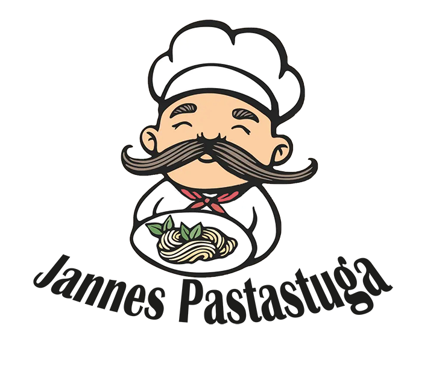
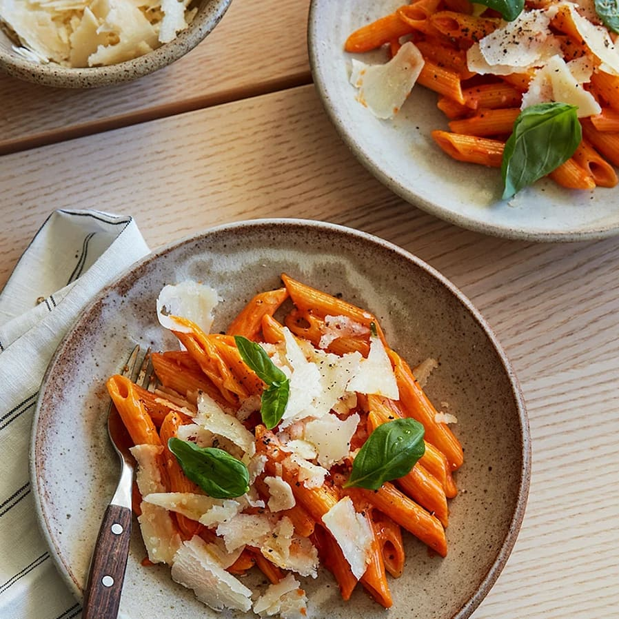

Dark Mode is OFF
Darkmode
LightMode

Vodkapasta
Startsida
|
Recept - Carbonara
|
Historia
Ingredienser - 4 Personer
3 Vitlöksklyftor
2 msk olivolja
1 dl tomatpuré
1/2 tsk chiliflakes
1/2 dl vodka
2 1/2 dl vispgrädde
salt
svartpeppar
4 port pasta (t ex penne)
Gör så här
Skala och hacka vitlöken. Fräs i oljan tills den får lite färg.
Tillsätt tomatpuré och chiliflakes och fräs ytterligare ca 5 minuter på medelvärme. Häll i vodkan och låt koka någon minut.
Rör ner grädden och låt koka ihop. Smaka av med salt och peppar.
Koka pastan enligt anvisning på förpackningen. Häll av och spar 1-2 dl av pastavattnet (för 4 port). Rör ner pastan. Tillsätt lite pastavatten i taget rör till önskad konsistens.
